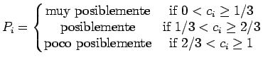

Aproximación Lingüística
El propósito del bloque de Interpretación Lingüística es el de convertir Números Difusos en Palabras. Sin embargo, en este trabajo se proponen diferentes tipos de salidas para distintas aplicaciones:
- Una palabra simple:
- Se calcula la consistencia entre (la salida del bloque de razonamiento aproximado) y cada conjunto difuso de la Variable Lingüística de salida

cons
Se selecciona como salida del bloque aquella etiqueta cuya consistencia sea máxima.
- Una frase descriptiva:
- Se calcula para
y se construye una frase de la forma
``La salida
, es
, y es
''.
En donde es uno de los siguientes modificadores:

- Un número difuso:
- Una salida válida es el número difuso sin cambio alguno.
- Un número Crisp:
- Otra salñida válida es un número crisp que represente el valor central del número difuso. Usamos el valor representativo definido en [#!Delgado88a!#], introduciendo un parámetro adicional
 que se explica en la sección 3.
que se explica en la sección 3.
Existen otras muchas alternativas para obtener un valor representativo de un número difuso; véase, por ejemplo, [#!Requena95!#] para conocer una aplicación de Redes neuronales que captura la subjetividad de un decisor.
- Una pareja de números crisp:
- Otra salida válida es una pareja de números crisp formada por el valor representativo y una medida de la ambigüedad del número, explicada en la sección 3.
Oscar Duarte
2005-05-01